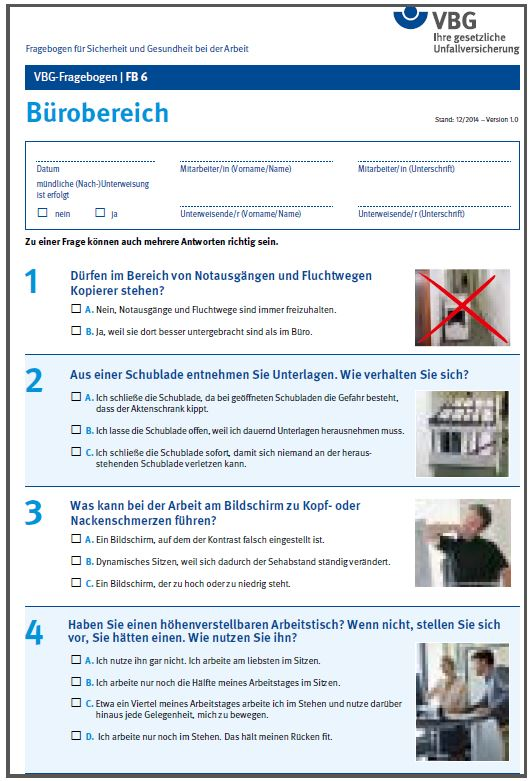
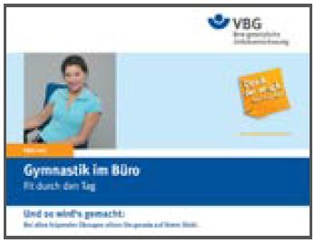
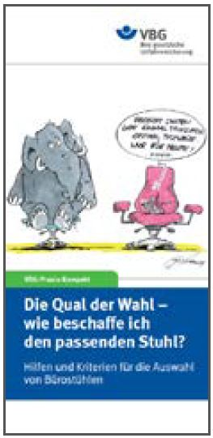
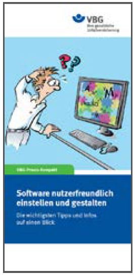

Gefährdungsbeurteilung
Praktische Unterstützung und Hilfestellungen zur Erstellung
der Gefährdungsbeurteilung in Bürobetriebe unter
www.gefaehrdungsbeurteilung.de (Angebot der Bundesanstalt
für Arbeitsschutz und Arbeitsmedizin)
Unterweisungshilfen
Alle vorgestellten Medien stehen kostenlos als Download
unter www.vbg.de zur Verfügung.
 |
VBG (Hrsg.): VBG-Fragebogen Bürobereich (= Fragebogen für Sicherheit und Gesundheit bei der Arbeit, FB 6). Hilfsmittel zur Unterweisung von Beschäftigten im Büro. |
|
VBG (Hrsg.): VBG-Info; Gesund arbeiten am PC. Testen Sie Ihren Arbeitsplatz (Version 2.1/2016-01), Hamburg. Faltblatt zur Unterweisung am Bildschirmarbeitsplatz; mit Hinweisen zur Aufstellung und Anordnung der Arbeitsmittel auf dem Schreibtisch sowie zur richtigen Einstellung von Tisch und Stuhl. |
 |
VBG (Hrsg.): VBG-Info; Gymnastik im Büro. Fit durch den Tag (Version 1.1/2010-12), Hamburg. Faltblatt zur Bewegungsförderung im Büro. Mit zahlreichen Anleitungen zu Übungen, die auf dem Stuhl am Arbeitsplatz oder im Pausenraum durchgeführt werden können. |
Praxishilfen
 |
VBG (Hrsg.): VBG-Praxis-Kompakt; Die Qual der Wahl – wie beschaffe ich den passenden Stuhl? (Version 1.2/2015-03), Hamburg. Kompakte Informationsschrift mit Hilfestellungen zur Auswahl und Beschaffung von geeigneten Büroarbeitsstühlen. |
 |
VBG (Hrsg.): VBG-Praxis-Kompakt; Software nutzerfreundlich einstellen und gestalten (Version 2.4/2016-11), Hamburg. Informationsschrift mit Praxistipps zur Softwareergonomie und Hilfestellungen zur Einstellung und Gestaltung von Software. |
Links zu weiteren branchenbezogenen Informationen
▶ www.dgb.de
Internetangebot des Deutschen Gewerkschaftsbundes
▶ www.arbeitgeber.de
Internetangebot der Bundesvereinigung der Deutschen Arbeitgeberverbände
▶ www.baua.de
Internetangebot der Bundesanstalt für Arbeitsschutz und Arbeitsmedizin
▶ www.dguv.de
Internetangebot der Deutschen Gesetzlichen Unfallversicherung
▶ www.vbg.de
Internetangebot der Verwaltungs-Berufsgenossenschaft
▶ www.verdi.de
Internetangebot der Vereinten Dienstleistungsgewerkschaft